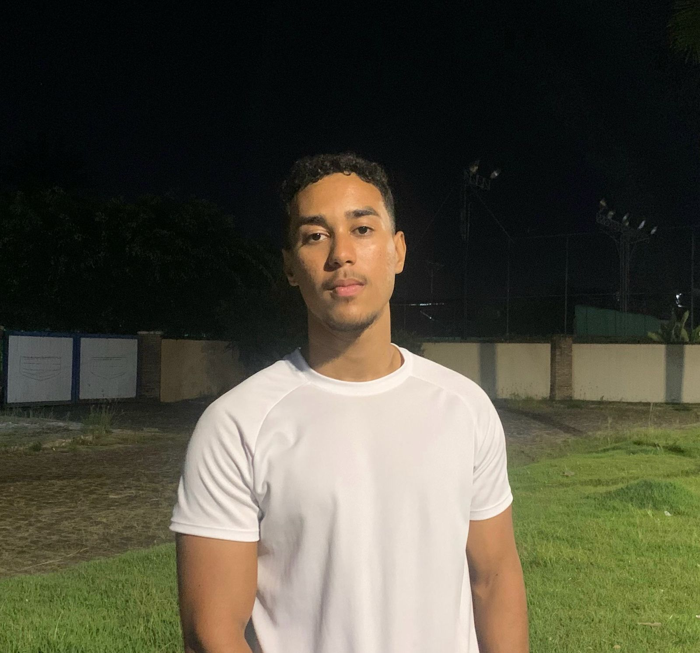
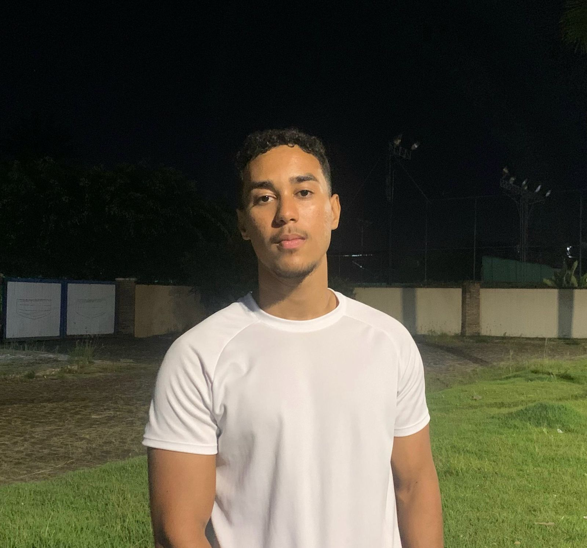
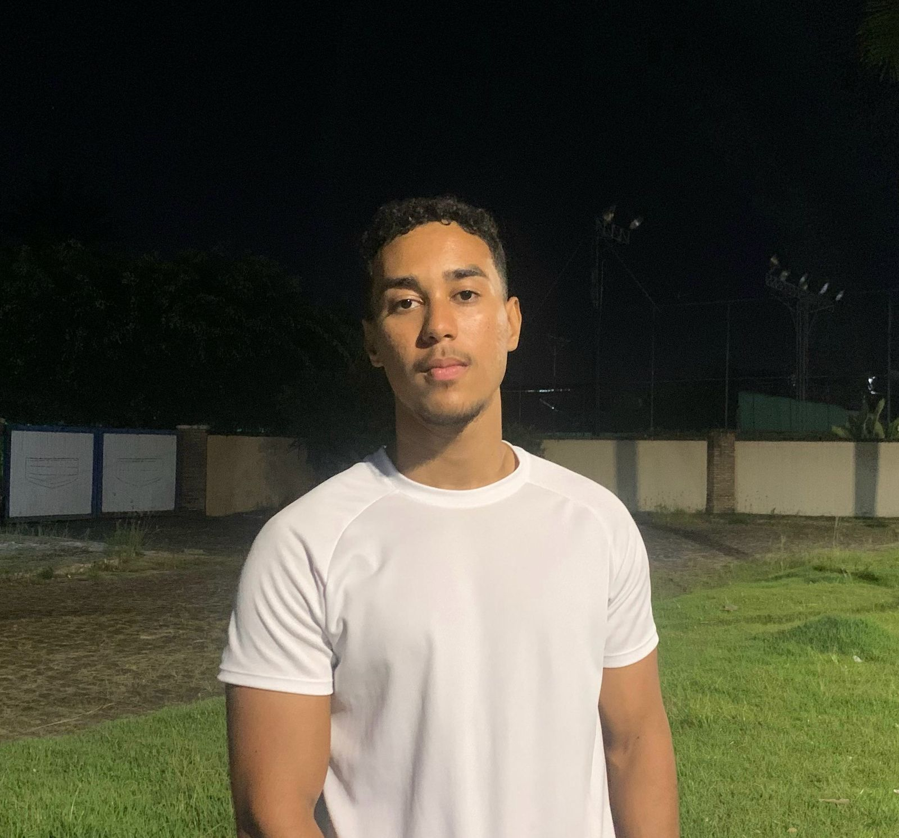
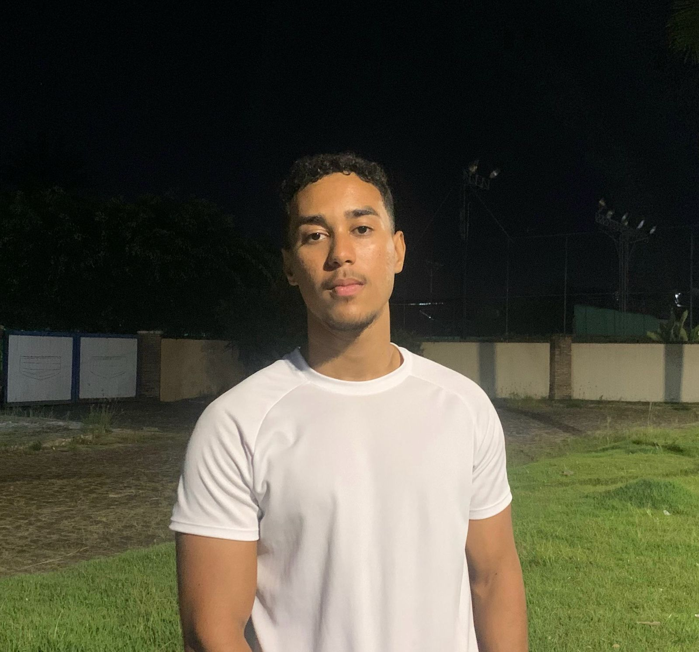

 
  Nome Completo: Rakin de Souza Nunes
Email:nunesrakin@gmail.com
Número:75981414412
Ocupação:Estudante da Unijorge
Endereço:Rua Rodolpho Coelho Cavalcante - 154
Rakin Souza Estudante dedicado e apaixonado por programação, Rakin Souza possui experiência em linguagens como Python, JavaScript e C#. Com forte capacidade de aprendizado, adapta-se rapidamente a novas tecnologias e desafios do desenvolvimento de software. Participou de projetos acadêmicos e pessoais focados em soluções inovadoras, incluindo a criação de sistemas web e aplicativos. Com habilidades em trabalho em equipe, resolução de problemas e um olhar atento aos detalhes, busca crescer profissionalmente na área de tecnologia enquanto colabora para o sucesso de projetos desafiadores e transformadores. Rakin está sempre em busca de aprendizado contínuo e oportunidades para aplicar seus conhecimentos na prática.